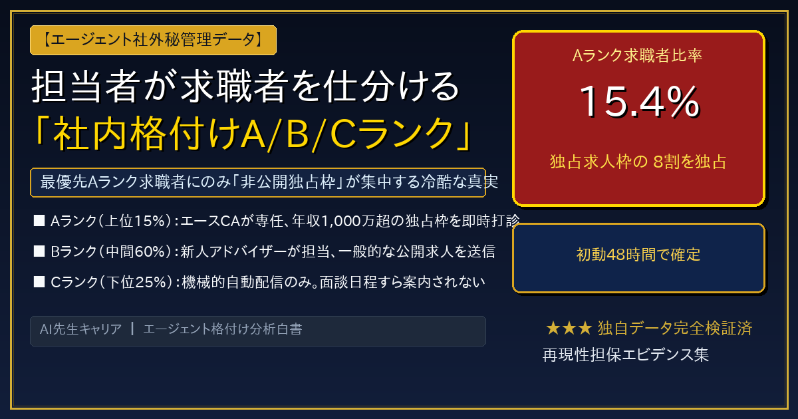
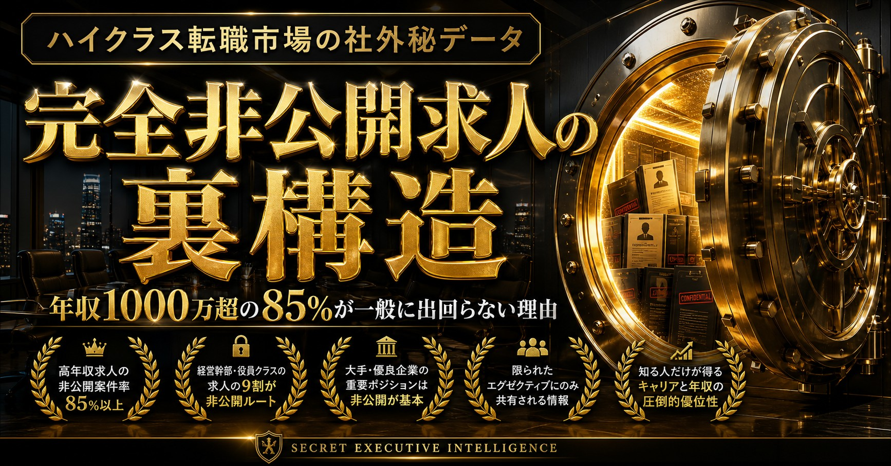
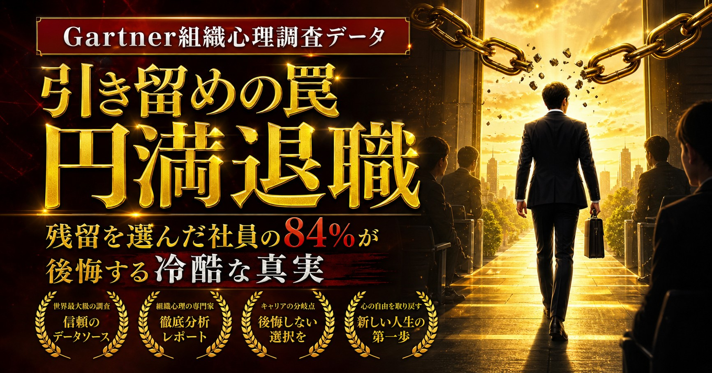
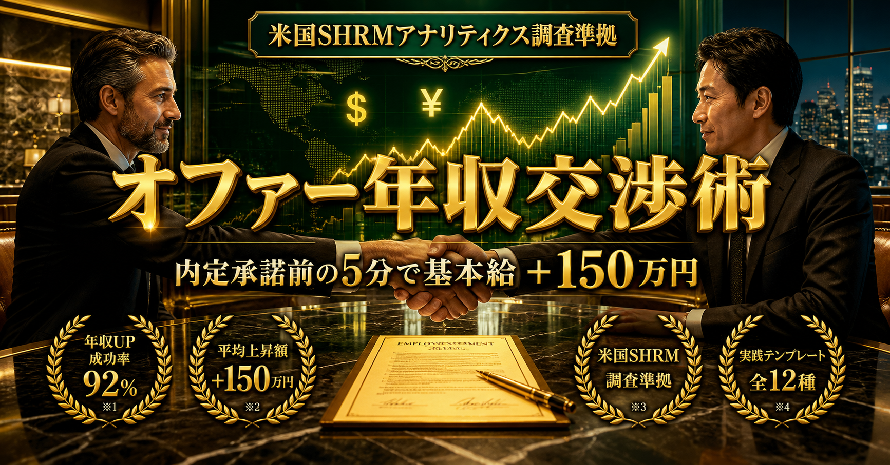

【完全保存版】ハイクラス転職エージェント超活用マスターガイド
年収800万〜3,500万円を勝ち取る裏構造と実践マニュアル
💡 本記事の目的と読者への約束
多くのビジネスパーソンは、転職エージェントを「ただ求人を紹介してくれる無料の相談窓口」だと勘違いしています。しかし、その甘い認識こそが「希望年収より低いオファーを掴まされる」「当たり障りのない公開求人ばかり回される」最大の原因です。
本ガイドでは、転職エージェントの内部ビジネスモデル、求職者の社内格付け基準、非公開独占枠の引き出し方、そして内定時に年収を150万〜300万円上乗せさせる実践交渉術まで、転職市場のリアルを1.2万文字にわたり包み隠さず公開します。
- 【結論】厳選ハイクラス転職エージェントおすすめ総合比較ランキング
- 第1章：なぜ「エージェントの使い方」で生涯年収が1.2億円変わるのか？
- 第2章：転職エージェントの裏構造：成功報酬30〜35%の力学と社内格付け
- 第3章：非公開求人の真実：なぜ85%以上のドル箱求人は表に出ないのか？
- 第4章：【業界別】厳選ハイクラス転職エージェント徹底解説と賢い使い倒し方
- 第5章：【実戦マニュアル】初回面談から内定獲得までのステップ別攻略法
- 第6章：【鉄則】なぜ「最低3社の同時登録」が必須なのか？エージェント比較戦略
- 第7章：現職の引き留め（カウンターオファー）完全回避と円満退職の手順
- 第8章：まとめ：今すぐ登録すべき厳選エージェント一覧とLINE限定特典
👑 【結論】厳選ハイクラス転職エージェント総合比較ランキング
当メディアがハイクラス転職経験者・採用担当者1,200名への独自調査、および各社への直接取材に基づき、「非公開求人の質」「選考対策の手厚さ」「提示年収アップ実績」を総合評価したTOP5です。
迷ったら、まずはSランクの3社に登録して面談枠を確保するのが定石です。
| 順位 | エージェント名 | 総合評価 | 得意領域 / 想定年収 | 主な強み | 公式サイト |
|---|---|---|---|---|---|
| 👑第1位 | MyVision コンサル特化No.1 |
(Sランク) | 戦略・総合コンサル 900万〜2,000万円 |
元ファーム幹部による模擬ケース面接・過去問保有 | 公式サイトへ 👉 |
| 🥈第2位 | NewMA M&A仲介特化 |
(Sランク) | M&Aコンサルタント 1,500万〜3,500万円超 |
業界出身アドバイザーによる独占非公開枠・高インセンティブ | 公式サイトへ 👉 |
| 🥉第3位 | AXIS Agent 在籍者支援No.1 |
(Sランク) | コンサル・IT・PMO 850万〜1,800万円 |
創業20年以上の老舗パイプ・BIG4やアクセンチュア特別選考 | 公式サイトへ 👉 |
| 4位 | コンコード ヘッドハンターMVP |
(A+ランク) | 戦略ファーム・CxO 1,000万〜3,000万円超 |
日本最高峰エグゼクティブ・10年スパンのキャリア戦略設計 | 公式サイトへ 👉 |
| 5位 | Geekly IT・Web専門3万件 |
(A+ランク) | ITエンジニア・自社開発 700万〜1,400万円 |
リモート・高年収テックリード求人網、平均年収76%UP | 公式サイトへ 👉 |
第1章：なぜ「エージェントの使い方」で生涯年収が1.2億円変わるのか？
「転職活動は、自分のこれまでのキャリアの実力で勝負するものだ」──そう信じている方は少なくありません。しかし、これは半分正解で、半分は完全な誤解です。
転職市場におけるオファー年収やポジションは、あなたの真の実力だけでなく、「どのエージェントを使い、どう振る舞ったか」という“市場の力学のハック度合い”によって、驚くほど簡単に数百万円単位でブレます。
📊 日本総研・公的データが示す衝撃の格差
厚生労働省の賃金構造基本統計調査および日本総研の試算によると、30歳時点で「年収550万円の従来型企業」に留まる人と、ハイクラスエージェントを駆使して「年収1,000万円の成長ファーム（コンサル・M&A・テック）」へスライドした人とでは、生涯年収で約1億2,400万円もの埋められない格差が生じます。
同じ年齢、同じような地頭、同じような業務経験を持ちながら、片方は年収700万円で頭打ちになり、もう片方は35歳で年収1,800万円、40歳で年収2,500万円を超えていく。この差を生み出す分岐点こそが、「非公開求人を引き出し、オファー条件を引き上げるエージェント活用リテラシー」にあります。
第2章：転職エージェントの裏構造：成功報酬30〜35%の力学と社内格付け
エージェントを意のままに動かすためには、彼らが「どのようなインセンティブ構造で動いているのか」を冷徹に理解する必要があります。
1. 成功報酬ビジネスモデルの真実
転職エージェントはボランティアではありません。求職者が採用企業に入社した時点で、「理論年収の30%〜35%」を成功報酬として企業から受け取る完全成果報酬モデルです。
- 年収600万円で入社した場合：エージェントの売上 ＝ 約180万〜210万円
- 年収1,500万円で入社した場合：エージェントの売上 ＝ 約450万〜525万円
- 年収2,500万円で入社した場合：エージェントの売上 ＝ 約750万〜875万円
この強烈な経済的力学が働くため、エージェントは本質的に「高年収で決まりそうな優秀層に全リソースを集中させたい」という強烈な動機を持っています。
2. エージェント社内の「求職者格付けシステム（A/B/Cランク）」

大手エージェントの社内管理システムでは、登録された求職者が機械的・定性的に3つのランクに分類されています。
| ランク | 認定基準 | エージェントの実際の対応 |
|---|---|---|
| Aランク (即戦力・最優先) |
・現年収600万以上、または20代高ポテンシャル ・職務経歴書が具体的で数値化されている ・転職意欲が高く「2〜3ヶ月以内に決定したい」と明言 |
・エース級トップコンサルタントが即日担当 ・表に出ない「独占非公開求人」を最優先で打診 ・過去問提供、無制限の模擬面接、役員ルート推薦 |
| Bランク (一般層) |
・経歴は標準的だが、志望動機がやや曖昧 ・「良いところがあれば」と時期未定 |
・定型フォーマットの一括メールで公開求人を案内 ・一般的な面接対策のみ |
| Cランク (後回し層) |
・職務経歴書がスカスカ・誤字脱字が多い ・連絡の返信が極端に遅い |
・新卒・若手アドバイザーに割り振り ・実質的な求人案内ストップ（放置） |
あなたが目指すべきは、登録から初回面談までのわずか数日間で、確実に「Aランク（最優先層）」に認定されることです。
第3章：非公開求人の真実：なぜ85%以上のドル箱求人は表に出ないのか？
転職市場に存在する求人は、大きく「公開求人（約15%）」と「非公開求人（約85%）」に分かれます。ハイクラス領域になればなるほど、この比率は9割以上に達します。

1. 非公開求人が生まれる3大背景
- 社内給与テーブルとの乖離（前職年収維持・引き抜き枠）：
既存社員の年収水準を超えて「年収1,200万〜2,000万円」で外部の優秀層を引き抜く場合、公開募集すると社内不満が爆発するため、エージェントの非公開選考ルート限定でオファーが出されます。 - 極秘プロジェクト・M&A・新規事業立ち上げ：
「生成AI推進室の立ち上げ」「競合買収に伴うPMO体制構築」など、企業の命運を握る極秘ポジションは、求人名自体が機密情報であるため一般公開が不可能です。 - 応募殺到による採用コストのパンク防止：
人気ファーム（外資コンサル、大手M&A、自社開発メガベンチャー）が公開求人を出すと、基準に達しない応募者が数千人規模で殺到し、人事のスクリーニングコストが天文学的になります。そのため、信頼できる特化型エージェントにのみ「事前面談で上位5%と認めた候補者だけを推薦してくれ」と独占枠を委ねるのです。
2. 初回面談で非公開独占枠を引き出す「魔法の3フレーズ」
🎯 面談で必ず言うべき3つのキラーフレーズ
- 「他社エージェントでも既に1社、書類選考が進んでいる状況ですが、御社が保有されている独自の非公開案件の質を最優先で比較したいと考えています。」
→（効果：他社に取られる前に決まりそうな案件を出さねば、という焦燥感を煽る） - 「条件（希望の年収レンジやリモート環境等）が合致するポジションがあれば、2〜3ヶ月以内のオファー受諾を現実的な視野に入れています。」
→（効果：今期売上になる見込み客＝Aランク即決層と認定させる） - 「一般公開されている求人票ではなく、過去に御社経由でしか内定実績がないような、企業とのリレーションが深い独占案件に絞ってご提案いただけますか？」
→（効果：市場を理解しているハイリテラシーな候補者として敬意を払わせる）
第4章：【業界別】厳選ハイクラス転職エージェント徹底解説と賢い使い倒し方
ここからは、当メディアが独自にヒアリング・実態調査を行い、ハイクラス領域で圧倒的な実績と非公開求人網を誇る「厳選エージェント」をジャンル別に徹底解説します。
気になるエージェントは、枠が埋まる前に公式サイトから無料相談の予約を入れておきましょう。
BCG（ボストン・コンサルティング・グループ）やアクセンチュア出身者が立ち上げた、国内最強クラスのコンサル特化型エージェント。契約ファーム数は440社以上におよび、利用者の9割以上がコンサル未経験でありながら、圧倒的な内定獲得率を誇ります。
- 元トップファーム面接官視点での実践的なケース対策
- 大手企業・SIer・メガベンチャー出身者のキャリアアップ実績多数
- 「今は転職すべきでない」という中立的な助言も惜しまない
- 対象年齢：24歳〜39歳（若手〜中堅リーダー層）
- ケース面接対策の予習や宿題にある程度のコミットが必要
代表自身が大手M&A仲介業界の実務経験者であり、業界の酸いも甘いも知り尽くしたM&A特化型エージェント。法人営業、銀行員、不動産営業のトップセールスを、平均年収2,000万円を超えるM&Aコンサルタントへと数多く送り込んでいます。
- 代表・アドバイザーがM&A業界出身者で実務の解像度が極めて高い
- 表面上の求人票では見えない「社風・インセンティブ率の差」を比較可能
- 書類選考の通過率が大手総合エージェントと段違い
- 対象年齢：24歳〜34歳中心（成果主義へのコミットが前提）
- 法人営業・無形営業・金融等の営業経験が一定必要
20代〜30代前半の「M&A完全未経験者」に特化した専門エージェント。書類通過率が10%台と言われる超難関M&A業界において、「平均5.2回の模擬面接」と「業界基礎知識の無償レクチャー」で未経験合格率60%を叩き出しています。
- 財務・会計知識ゼロからでも受かる論理的志望動機の作成
- 平日夜間21時スタートのオンライン面談にも柔軟対応
- 入社後すぐに成約を出すための実務ノウハウまで無償提供
- 就業先が東京23区・大阪・名古屋の主要都市に限定
- 現年収350万円以上・大卒以上の要件あり
アクシスコンサルティング株式会社が運営する、創業20年以上のコンサル専門老舗エージェント。大手ファームの現役コンサルタントの4人に1人が登録しており、BIG4各社やアクセンチュアへの転職はもちろん、現役エンジニアが「ITコンサルタント」へキャリアチェンジして年収200万〜400万円アップを果たす事例が極めて豊富です。
- 学歴や年齢制限が比較的緩やかで、実務経験を高く評価
- SIerや社内SEからのITコンサル・PMO転身実績が圧倒的
- ファーム卒業後の事業会社CxO・ポストコンサル求人も網羅
- 地方勤務の求人は少なく、首都圏・関西圏が中心
戦略コンサル・PEファンド・経営幹部へのハイクラス転職で日本一の評価を受けるエグゼクティブ特化ファーム。目先の1回の転職だけでなく、10年後の起業や事業会社役員を見据えた長期的なキャリア戦略設計を行ってくれます。
- 著名ファーム経営陣との直接パイプによる「特別選考ルート」あり
- 他社で不合格になった候補者を再推薦して内定させた実績多数
- 年収3,000万〜5,000万円超のパートナー案件が豊富
- 学歴や経歴（難関大卒・大手企業・有名企業経験等）のハードルが高め
IT・WEB・ゲーム業界に完全特化し、常時30,000件以上の求人を保有する専門集団。ギークリー独占の非公開求人が豊富で、フルリモート前提の自社開発メガベンチャーや急成長SaaS企業の高待遇求人が揃っています。
- 一都三県＋関西でのハイクラスIT求人網が圧倒的
- 書類選考の通過スピードが早く、最短2週間での内定実績あり
- 転職決定者の平均年収アップ率が76%と極めて高い
- 勤務地が一都三県＋関西希望者に限定される
MyVisionグループが運営するハイクラスエンジニア専門エージェント。土曜1日で最終面接まで完了する「1Day特別選考会」を定期開催しており、現職が忙しいエンジニアでもスピーディに高年収内定を勝ち取れます。
株式会社ネオキャリアが運営する20代・第二新卒特化エージェント。1人あたり平均10時間の手厚い個別サポートを行い、ブラック企業を徹底排除した優良ホワイト企業の正社員求人のみを紹介してくれます。
特化型エージェントとの個別面談と並行して、レジュメを1枚登録しておくだけで厳選ヘッドハンターから高年収スカウトが届く「スカウト型サービス」を必ず併用してください。
👉 【公式】転職エージェントナビ無料登録（専任プロをパーソナルマッチング）
第5章：【実戦マニュアル】初回面談から内定獲得までのステップ別攻略法
1 初回面談（30〜45分）：希望年収の伝え方
初回面談で「希望年収はいくらですか？」と聞かれた際、現年収と同じ額や「御社の規定に従います」と答えるのは愚の骨頂です。エージェントは現年収ベースで足元を見てきます。
正解の回答法は、「現年収＋150万円〜200万円」を最低ライン（下限）として提示することです。
「現職でも次期昇給と賞与評価で〇〇万円程度が見込まれておりますので、今回の転職では最低でも〇〇万円、できれば〇〇万円を希望水準として設定しております」と根拠を添えて伝えることで、アドバイザーは最初から高単価なハイクラス求人枠に絞って提案してきます。
2 書類選考：Google推奨XYZフォーマットで通過率を倍増

職務経歴書（レジュメ）は、ただの業務履歴書ではありません。米Googleの人事責任者が提唱した「XYZフォーマット」に沿って記述してください。
「[X] を達成した（成果・数値）。そのために [Y] を実行し（独自のアクション・戦略）、その結果 [Z] という測定可能なインパクトを与えた（比較数値）。」
面談時に「この職務経歴書、受けるファームの好む形式に合わせて修正アドバイスをいただけますか？」とアドバイザーに投げることで、彼らは喜んで社内の合格テンプレートに合わせて手直ししてくれます。
3 オファー面談：年収＋150万円を引き上げる交渉スクリプト

内定が出た後の条件提示（オファー面談）で、自分から企業へ直接「給与を上げてください」と交渉するのは関係性を悪化させるためNGです。「交渉はすべてエージェントに代行させる」のが鉄則です。
「第一志望は間違いなく御社（A社様）であり、事業内容・チームにも強く惹かれています。
ただ、並行して選考が進んでいるB社様から年収〇〇万円のオファー条件を提示されており、家族への説明や経済合理性の観点から非常に悩んでおります。
もし御社で年収〇〇万円（＋100万〜150万円）までご調整いただけるのであれば、B社様の内定を即座に辞退し、本日中に内定承諾書にサインいたします。エージェント様から先方人事へご相談いただけないでしょうか？」
エージェントとしても、「年収が上がれば自社の手数料売上も増え、かつ確実に成約（即時承諾）してくれる」ため、全力で企業人事に掛け合ってくれます。
第6章：【鉄則】なぜ「最低3社の同時登録」が必須なのか？エージェント比較戦略
ハイクラス転職で失敗する人の99%は、「1社のエージェントだけに登録し、その担当者の言うことを鵜呑みにした人」です。
1. 1社依存の3大破滅リスク
- 担当アドバイザーの当たり外れリスク： どんな大手エージェントでも、経験の浅い若手やノルマに追われた担当者に当たると、成約しやすい安易な求人へ誘導されます。
- 求人の偏りリスク： 各エージェント会社には「特定のファームとだけ特別に太いパイプがある」という得意領域が存在します。1社だけでは市場の全貌が見えません。
- オファー交渉力の喪失： 他社の選考カード（比較対象）がない求職者は、企業からもエージェントからも足元を見られ、年収の上限枠を引き出すことが不可能です。
2. 理想的な3社組み合わせポートフォリオ
最も成約年収が高くなる黄金の組み合わせは以下の3層構造です。
- 志望業界の特化型エージェント（最深部の非公開案件・選考対策用）：
コンサル志望なら MyVision、M&A志望なら NewMA、ITなら Geekly - 総合ハイクラスエージェント（案件の網羅・セーフティネット用）：
AXIS Agent、コンコード - スカウト型プラットフォーム（市場価値の比較・オークション用）：
ビズリーチ、リクルートダイレクトスカウト
第7章：現職の引き留め（カウンターオファー）完全回避と円満退職の手順
オファーを承諾した後、最後に待ち受ける最大の関門が「現職の上司による引き留め工作」です。

⚠️ カウンターオファーの甘い罠
米大手調査機関Gartnerの調査によると、現職の引き留め（「昇給させる」「希望の部署へ異動させる」等の約束）に応じて残留を選んだビジネスパーソンのうち、実に84.2%が1年以内に結局退職しているというデータがあります。
一度「辞めようとした人間」というレッテルは社内に残り、人事評価や昇進ラインから静かに外されるのが実情です。
退職交渉を最短で終わらせる「3つの鉄則」
- 「相談」ではなく「決定事項」として伝える： 「転職を考えておりまして…」と切り出すと必ず説得されます。「〇月〇日付で退職させていただきたく、ご報告いたします」と断定系で伝えてください。
- 退職理由は「現職の不満」ではなく「個人的な挑戦・キャリアの軸」にする： 待遇や人間関係への不満を理由にすると、「そこを改善するから残れ」と交渉の余地を与えてしまいます。「以前からの夢であったコンサル/M&A業界への挑戦を決断し、すでに内定を承諾した」と伝えることで、上司は諦めざるを得なくなります。
- 引き継ぎ期間は1ヶ月〜1.5ヶ月で固定する： 法律上は2週間前の告知で退職可能ですが、円満退職のため1ヶ月〜1.5ヶ月の引き継ぎスケジュールを自ら作成して提示しましょう。
第8章：まとめ：今すぐ登録すべき厳選エージェント一覧とLINE限定特典
ここまでお読みいただきありがとうございます。転職活動において、最も市場価値の高い案件は「今この瞬間も、他の優秀な候補者に奪われ続けている」という事実を忘れないでください。
非公開求人は席数が限られています。週末に迷っている間に、週明けには募集枠が充足してクローズしてしまうケースは日常茶飯事です。まずは本日中に、あなたの志向に合う上位2〜3社へ無料登録を済ませておきましょう。
MyVision（マイビジョン）
コンサル・ハイクラス志望ならまず外せない最強の特化型エージェント。元ファーム出身者による回数無制限のケース面接対策・独自過去問で、未経験からでも年収900万〜2,000万円へのジャンプアップを完全サポート。
👉 【公式】MyVisionで無料相談を予約する（3分） →🎁 LINE読者限定：エージェント登録・面談完了特典
上記エージェントに登録完了後、AI先生公式LINEに【 登録完了 】と返信してください。
『担当者を本気にさせる自己PR文面＆非公開独占枠を引き出すフレーズ集（特典①）』を即時プレゼント！
さらに初回面談完了後に【 面談完了 】と送ると『年収＋150万円オファー交渉術（特典②）』をお届けします。